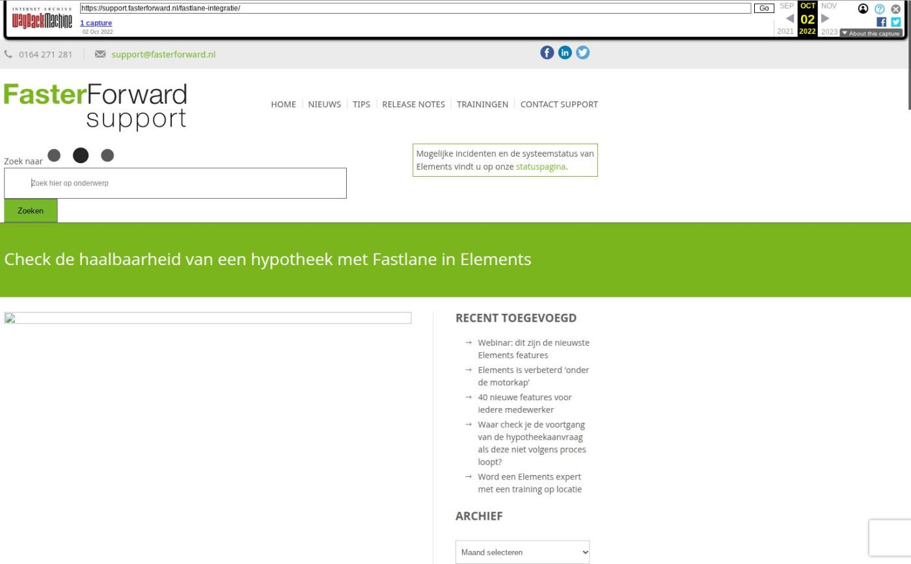

Check de haalbaarheid van een hypotheek met Fastlane in Elements

Tekstinhoud
Fastlane Oriëntatie, de nieuwe visuele en cijfermatige tool voor hypotheekberekeningen van De Nationale Hypotheekbond, is vanaf nu beschikbaar in Elements voor gebruikers van PortefeuilleSignalen. Met Fastlane Oriëntatie bereken je snel en eenvoudig de verantwoorde hypotheekhoogte met de daarbij behorende woonlastenverzekeringen. Als output genereert het systeem de zogenaamde ‘Haalbaarheidscheck’. Deze check geeft antwoord op de vragen: ‘Kan ik deze woning kopen?’ en ‘Kan ik hier blijven wonen?’
Fastlane: van beheer naar oriëntatie en andersom
Fastlane is de onmisbare schakel tijdens het oriëntatieproces. Iedere klant heeft voor de aankoop, verbouwing, oversluiting of andere wijziging van de hypotheek baat bij een goede oriëntatie in de Fastlane. Je krijgt eenvoudig inzicht in de maximaal verantwoorde hypotheek per toetsrente en de impact van het naderende pensioen.
Met deze informatie bepaal je samen met de klant de ideale hypotheekconstructie. Snel, eenvoudig en voor iedereen te begrijpen. Daarnaast krijgt de klant inzage in de verantwoorde maandlast indien hij tijdens looptijd werkloos raakt, arbeidsongeschikt wordt of indien zijn partner komt te overlijden. De Fastlane rekent de tekortkomingen uit en voorziet deze van een verzekeringsoplossing inclusief de bijbehorende premie(s).
Alles over Fastlane »
Duidelijk rapport voor de klant
De ‘Haalbaarheidscheck’, bestaande uit twee pagina’s, biedt de klant de informatie die nodig en begrijpelijk is. Op de eerste pagina staat of de klant de woning kan kopen, wat de benodigde hypotheek is en wat zijn maandelijkse lasten zijn. Dit is alle essentiële informatie voor de klant.
De tweede pagina vermeld een gedetailleerde financieringsopzet. Hierin staat overzichtelijk alle kosten vermeld welke hebben hebben geleid tot de benodigde hypotheekhoogte. Denk hierbij aan de koopsom of huidige hypotheekhoogte, welke kosten er naast de koopsom, verbouwing, energiebesparende voorzieningen, overdrachtsbelasting en de advies- en bemiddelingskosten.
Bekijk hier een voorbeeldrapport »
Integratie in Elements
Voor advieskantoren die Elements én PortefeuilleSignalen al gebruiken, is Fastlane Oriëntatie gratis beschikbaar in een klantdossier. Dit komt omdat Fastlane (een deel van) dezelfde gegevens gebruikt als PortefeuilleSignalen én Fastlane geïntegreerd is in de PortefeuilleSignalen software.
Klantgegevens zoals naam, adres, geboortedatum en inkomen worden automatisch overgenomen vanuit het dossier in Elements naar Fastlane. Tijdens het invoeren en aanvullen van persoonlijke en financiële gegevens, wordt de verantwoorde bruto maandlast en het verantwoorde hypotheekbedrag direct automatisch berekend.
Continue doorontwikkeling
Deze nieuwe applicatie is bedacht en ontwikkeld door hypotheekprofessionals en software-experts met tientallen jaren ervaring in de branche en vervolgens uitgebreid getest in de praktijk.
De doorontwikkeling van Fastlane is continu in beweging en wordt tweewekelijks uitgebreid met nieuwe features en optimalisaties.
Demonstratie aanvragen
Wil je een live demonstratie en uitleg van Fastlane? Laat dan hieronder je gegevens achter. Een medewerker van De Nationale Hypotheekbond neemt dan contact met je op.
Je naam
Je e-mailadres
Telefoonnummer (optioneel)
Je bericht (optioneel)
Impressies Fastlane in Elements
Startscherm met woningwaarde en maandlasten
Analyse huidige woonsituatie
Financieringsopzet
Geplaatst op 23 februari 2022 (Laatste update: 04 augustus 2022)